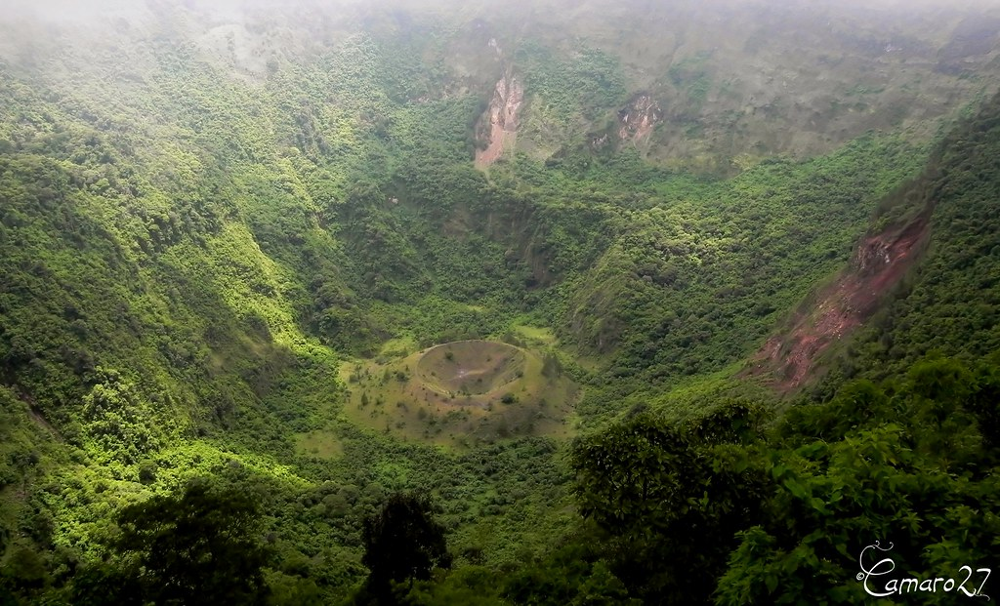
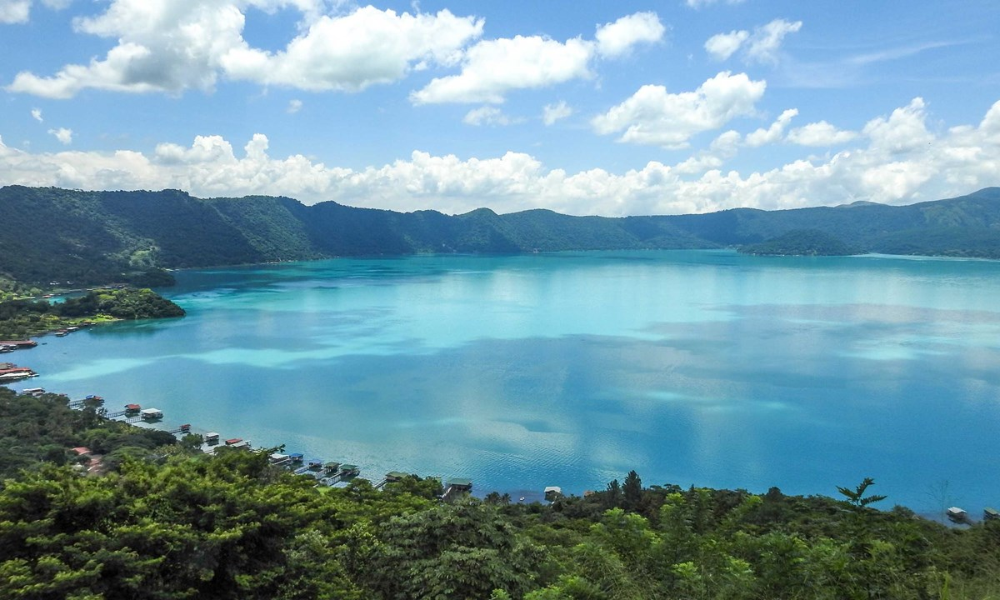

5 lugares que debes ver de El Salvador
Playa El Tunco

Esta playa es conocida por la famosa piedra que forma la imagen de un Tunco
(Cerdo) que se encuentra
a la orilla de este lugar y que por años ha visto pasar generaciones de
surfistas que han crecido y
practicado el Surf en el territorio nacional. Se puede decir que todo el que
ha
practicado surf en
el país, ha visitado esta emblemática playa. Posee arena volcánica y el
desagüe
del río Grande de La
Libertad, el cual es conocido como La Bocana del Tunco.
Si eres amante del Surf, esta playa es ideal para practicarlo, pues se
caracteriza por poseer oleaje
alto.
En el Tunco podrás encontrar muchos establecimientos de comida, alojamiento
y
bares, así es que, si
eres de las personas que buscan diversión al máximo, en el municipio de
Tamanique, en la playa El
Tunco, la encontrarás. Disfrutarás de un ambiente incomparable, con buena
música
de los restaurantes
y bares que se encuentran alrededor; en ellos pueden degustarse exquisitos
platillos nacionales e
internacionales, cuya especialidad son los mariscos.
Ruinas El Tazumal

El sitio arqueológico Tazumal está situado en la ciudad de Chalchuapa,
departamento de Santa Ana, a
poco más de una hora de distancia de San Salvador. La zona de Chalchuapa
constituye una zona
arqueológica integrada por varios sitios reconocidos, tales como Tazumal,
Casa
Blanca, El Trapiche y
la Laguna de Cuscachapa. La ocupación de Tazumal tuvo lugar desde 1200 a.C.
Su
mayor estructura mide
24 metros de altura, cuenta con doce escalones o plataformas y en ella se
encontraron tumbas con más
de 116 vasijas, joyería de jade, “espejos” de pirita de hierro, artefactos
de
juego de pelota y
cerámica con forma de lagartos. En Tazumal se halla también la piedra de las
victorias, que consiste
en un monolito de influencia Olmeca que presenta cuatro petrograbados
distintos
en sus cuatro lados,
fechado en 700 a.C., aproximadamente.
Entre los hallazgos más importantes de Tazumal se encuentra la Virgen de
Tazumal, que fue encontrada
en 1892 por el historiador Santiago Barberena, quien la trasladó al Museo
Nacional; y el llamado
Chac-Mool, el cual fue encontrado en la ahora nombrada Laguna Seca de
Chalchuapa.
Parque nacional El Imposible

El Imposible es una selva, en partes tropical y en otras sub-tropical.
Ubicada
sobre la Sierra de
Apaneca-Ilamatepeque, posee la mayor biodiversidad en el país como parte de
un
bosque maduro, típico
de los inicios de Mesoamérica.
El Parque Nacional El Imposible, abierto al público desde 1997, ofrece al
turista: áreas de acampar,
un centro de interpretación, senderos interpretativos y convencionales,
miradores, guías comunales,
como también infraestructura adecuada para alojar a los visitantes.
Volcán Boquerón
El volcán de San Salvador, tambien conocido como El Boquerón, es uno de los
lugares más emblemáticos de El Salvador; este gigante de la
naturaleza se encuentra ubicado en los municipios de Quezaltepeque, San Juan
Opico, Colón y Santa
Tecla en el departamento de La Libertad y Nejapa en el departamento de San
Salvador. Por su altura
puede ser visto desde la ciudad capital de San Salvador y alrededores ya que
se
ubica a once
kilómetros del centro de la ciudad.
El volcán abarca un área de 110 kilómetros cuadrados y está compuesto de
tres
partes: Una cumbre
elevada denominada El picacho (1,960m), la parte central o cráter conocida
como
El boquerón (1,839m)
y una tercera elevación menos prominente al noreste del cráter llamada El
Jabalí
(1,397 m). También
existen otras pequeñas elevaciones las cuales son otros cráteres que se
encuentran inactivos y son
conocidos como: La Joya, Puerta de la laguna, Mar de Chanmico,
Boqueroncillo,
Los Chintos, El Playón
y Laguneta la Caldera. Todos estos cráteres se encuentran en un diámetro de
diez
kilómetros.
Lago Coatepeque

El lago de Coatepeque es de origen volcánico y está situado a 18 km al
sur de
la ciudad de Santa
Ana. Tiene una altitud de 745 metros sobre el nivel del mar y una
superficie
de 25.3 km cuadrados.
Además, su profundidad es de 115 m.
La caldera se formó como resultado de una gran erupción explosiva que
sucedió entre 57,000-72,000 a.
C. Luego se formaron conos de escorias y flujos de lava en la parte
occidental de la caldera, así
como 6 domos de lava (Rhyodacite). La formación del domo más reciente se
inició alrededor de 8000 a.
C. Los accidentes más importantes del lago de Coatepeque son las dos
pequeñas penínsulas denominadas
“Los Anteojos” y la Isla del Cerro, donde los indígenas pipiles tenían
un
templo y un monolito
representativo de la diosa Itzcueye. En sus riberas hay unas formaciones
rocosas llamadas “Los
Anteojos”. El domo norte tiene 25 metros de diámetro y 25 metros de
altura,
y el domo sur tiene 150
metros de diámetro y 25 metros de altura.
El topónimo “Coatepeque” significa “Cerro de Culebras” en lenguaje
náhuatl.
En la cuenca viven más
de 20,000 personas, más un promedio de 5,000 turistas mensuales que
visitan
el lago.
El Lago Coatepeque en el 2013 participio en la octava maravilla del
mundo
donde obtuvo el segundo
lugar, siendo así uno de los destinos preferidos por turistas de
diversos
países que lo han
visitado. Declarado centro de interés turístico nacional Coatepeque es
uno
de los destinos que no se
puede dejar de visitar, simplemente porque nos enamora a primera vista.